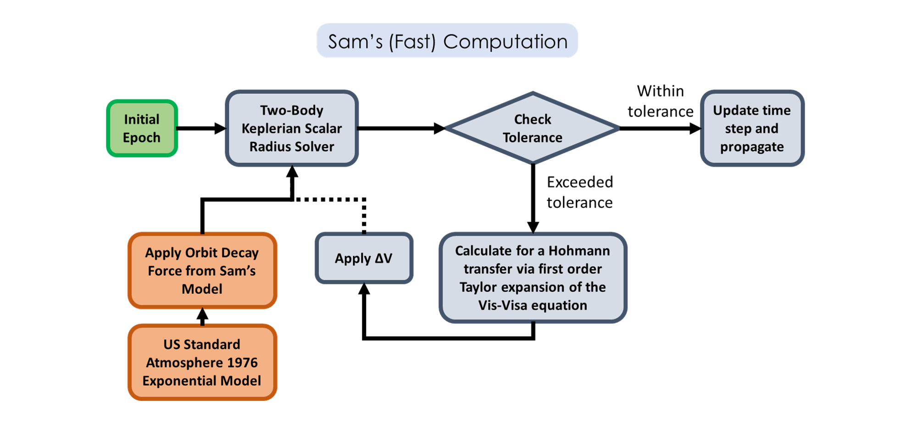

An Overview
Why was ORBITM created? There are two key reasons behind ORBITM. First, the proliferation of tens of thousands of LEO satellites in our near future mandates a quick and efficient means of estimating the lifetime of not just the orbiters but also of debris. The second reason is that ORBITM can also be used to support rapid iterations of spacecraft designs in agile development. For example, different iterations of solar panels or radar reflector designs that are proposed frequently, would impact the drag characteristics and mission life-time. ORBITM allows for the rapid ball-park assessments of such scenarios.
Figure 1.1 - Agile development demands that the mission planner can perform frequent mission life comparisons over rapidly changing iterations of spacecraft structures.
Traditional orbit maintenance simulations can be cumbersome and tedious to do on STK, GMAT, FreeFlyer, or even on your own code. Thus, ORBITM simplifies this entire drag-simulation process - in a fast and automated way that keeps up with rapidly changing iterations, without over-burdening the mission planner with repeated mission life-time simulations.
There are two modes of simulation available in ORBITM.
The first, is a fast-compute orbit decay and maintenance model considering primarily drag effects using the U.S. Standard Atmosphere 1976 model (Sam’s Simulator).
The second is a more accurately modelled but resource intensive mode that interfaces with and automates STK Astrogator to perform a high-precision orbit decay and maintenance simulation. The orbit model in STK uses a 21 by 21 (degree by order) geopotential and computes drag using a Jacchia-Roberts Atmospheric Density model.

However, in the second mode, you would need a valid STK Astrogator and STK Integration license installed with STK 10 or 11, for the interfacing to work.
Note
ORBITM was designed for low Earth orbits. Thus, the working range of altitudes, before loss of atmospheric density accuracies, should be bounded within 86 - 1,000 km.
Warning
ORBITM was not designed for high precision, and thus the life-time estimation cannot be used for re-entry and descent positioning estimations.